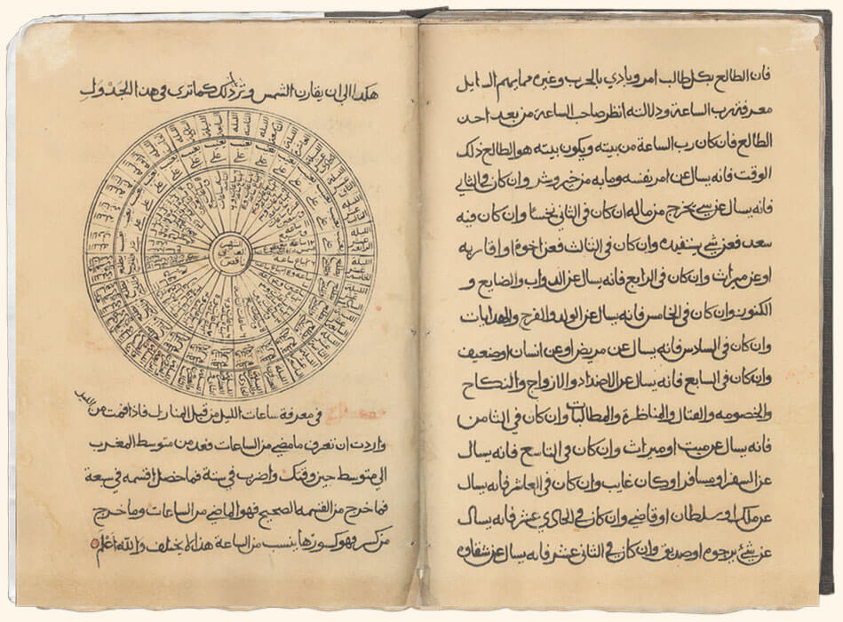

Omani researchers have said that there are an estimated 60,000 Omani manuscripts in the possession of private and public libraries and some cultural institutions. Ten per cent of such manuscripts are reachable and 1 per cent exist on the Internet.
Collection of Arabic manuscripts began in Oman around 1876 on the foundation of the Ministry of National Heritage. The aim was to collect Arabic manuscripts which were in private hands.
It was possible to examine thousands of old Omani manuscripts. Hundreds of these, had been already catalogued.Of the catalogued manuscripts, copies of the Koran, works on religious science, literature, philosophy, medicine, applied science, astronomy, history, and philology.
Many manuscripts were concerned with the Palaj irrigation system, a system unique to Oman.
Manuscripts cover a wide period, ranging in date from 904 A.H. (1499 AD) until this century.
Here only examples of authentic Omani manuscripts on different areas of interes:
Some Examples of Old Omani Manuscripts
- الكل
- قرآن
- فلك
- الشعر
- العلوم
- علوم الدين
القرآن الكريم
قرآن
تحديد المواقع
فلك
شعر قديم
شعر
العصب البصري
علوم
علم الفقه
علوم الدين
القرآن الكريم
قرآن
نظم الملاحة
فلك
شعر قديم
شعر
علم الأسماء
علوم
سيرة نبوية
علوم الدين
الجغرافيا
علوم
القرآن الكريم
قرأن


{kind=link}
{kind=link}
{kind=link}
{kind=link}
{kind=link}
{kind=link}
{kind=link}
{kind=link}
{kind=link}
{kind=link}
{kind=link}
{kind=link}